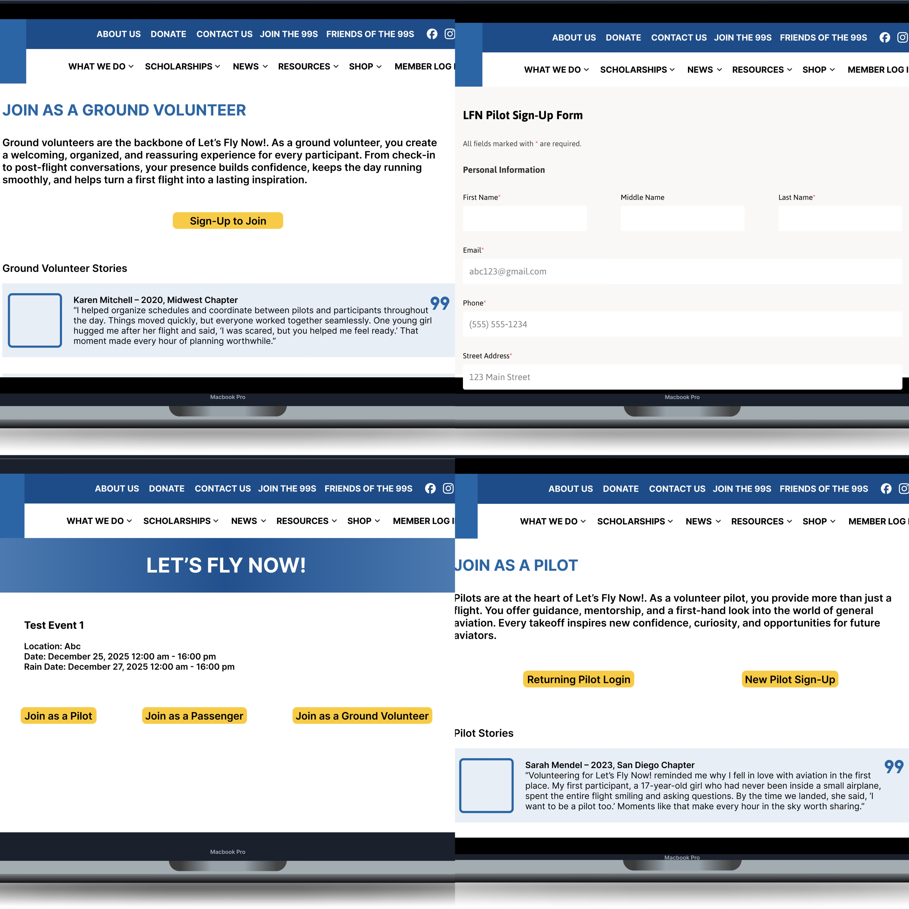
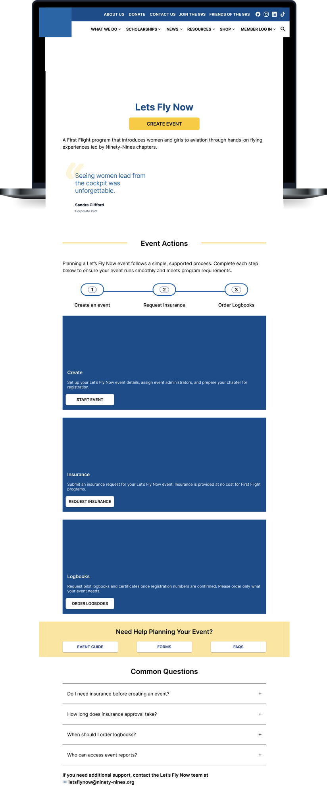
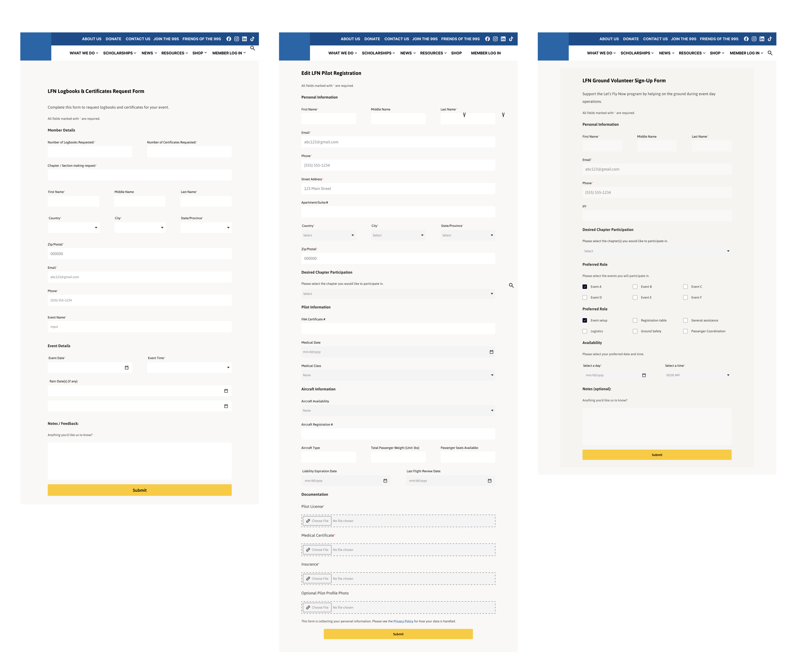

Client Work · Forms · Engineering Handoff · Teamwork
Let’s Fly Now - redesigning event sign-ups for the Ninety-Nines

This project provided design ideation and functional prototypes for The Ninety-Nines while they were simultaneously working with another company on their website redesign. Our team’s work was intended as a design exploration and prototype, rather than a published website.
The Problem
Let’s Fly Now events involve three kinds of participants: volunteer pilots, ground volunteers, and passengers (the women and girls taking their first flight). Historically, all of them signed up on paper forms at events.
- Sign-up data was collected inconsistently across chapters and events
- Records were never reliably aggregated, and some data was simply lost
- The organization couldn’t follow up with participants, track volunteer history, or report on reach
Therefore, the redesign had a concrete operational goal: move sign-ups from paper to structured digital forms so the data survives.
Understanding the Client
- The stated request is rarely the whole need. They asked for a website redesign, but what they needed was actually a data pipeline.
- Nonprofits like the 99s design for volunteers, not employees. Every flow had to work for someone running an event for the first time, while also considering the three different stakeholders involved.
- Constraints are design inputs. Our pages had to live within the existing ninety-nines.org website, so we had to faithfully match its existing design language rather than impose our own.
We ran a weekly cadence: a 45-minute meeting with the Ninety-Nines plus a 45-minute internal debrief. Requirements emerged over weeks of conversation, and the debriefs were where we translated what the client said into what we’d actually design.
My Contributions
1. Landing page redesign
My partner and I redesigned the landing page as the program’s front door: a clear description, a participant testimonial, and immediate paths into each role — Join as a Pilot, Join as a Passenger, Join as a Ground Volunteer — plus an event-organizer path with a step-by-step “Event Actions” guide and an FAQ.

2. Sign-up flows for all three participant types
- Pilots: a returning-pilot login vs. new-pilot sign-up split, collecting personal info plus required credentials (insurance, license documentation)
- Ground volunteers: a role explanation (“the backbone of Let’s Fly Now”) with volunteer stories leading into a simple form
- Passengers: a form with conditional logic: under-18 passengers require guardian information. Guardian consent wasn’t an edge case — it was a core requirement.
I chose to have each flow end in a confirmation state, so participants know their registration was recorded. The exact assurance the paper system couldn’t give anyone.


3. Storytelling as a recruitment tool
I kept a section on each role page to include real stories—a pilot describing why volunteering reminded her why she loves aviation, and a ground volunteer recalling a scared first-time flyer telling her, like “You helped me feel ready.” I believed that for a volunteer-powered program, the sign-up page is also a persuasion page.

Learning to work as part of a design team
- My design partner taught me her user-flow diagramming approach, which I later applied to map all three journeys before designing a single screen.
- Owning part of a shared system. My pages had to feel continuous with my design partner’s work and be buildable within what the engineers were implementing.
At the end of the batch, we presented at the Develop for Good showcase and handed off our prototypes and recommendations. Throughout the design and handoff process, I learned that understanding a client’s operations is a design skill. The best screens I made came from asking what happens and what could be improved after each week’s check-in.